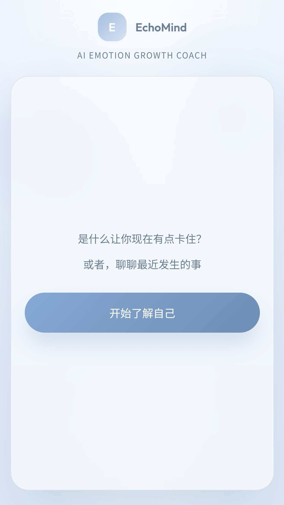
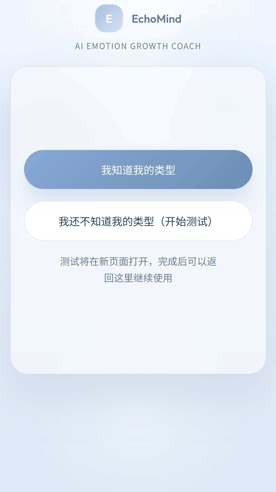
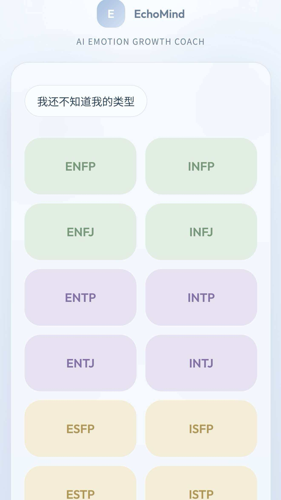
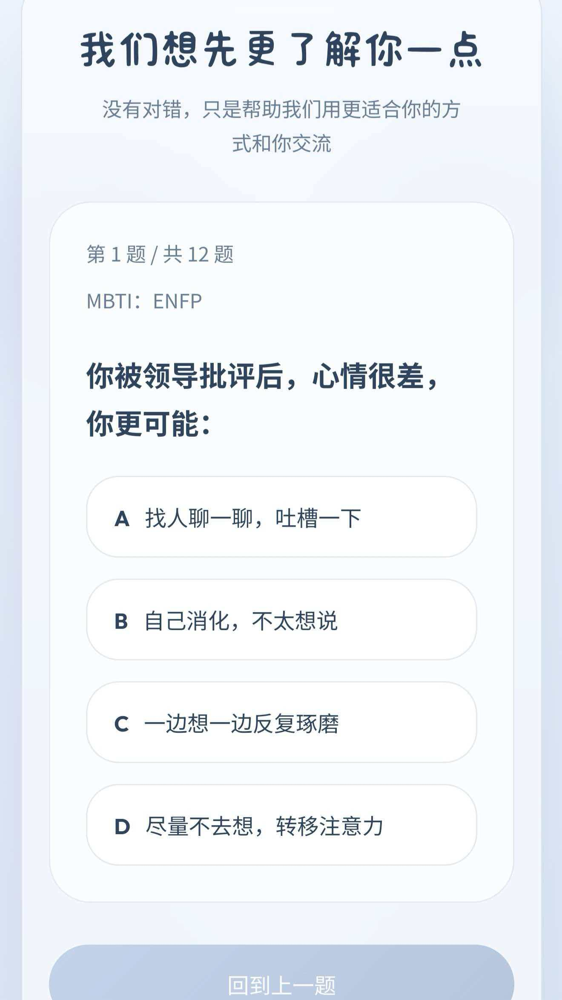
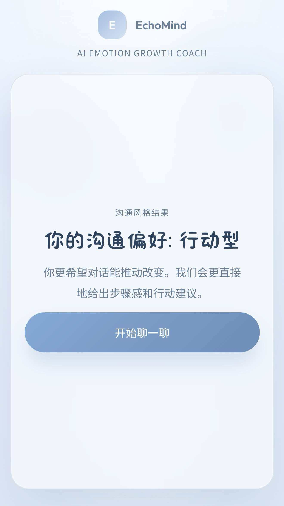
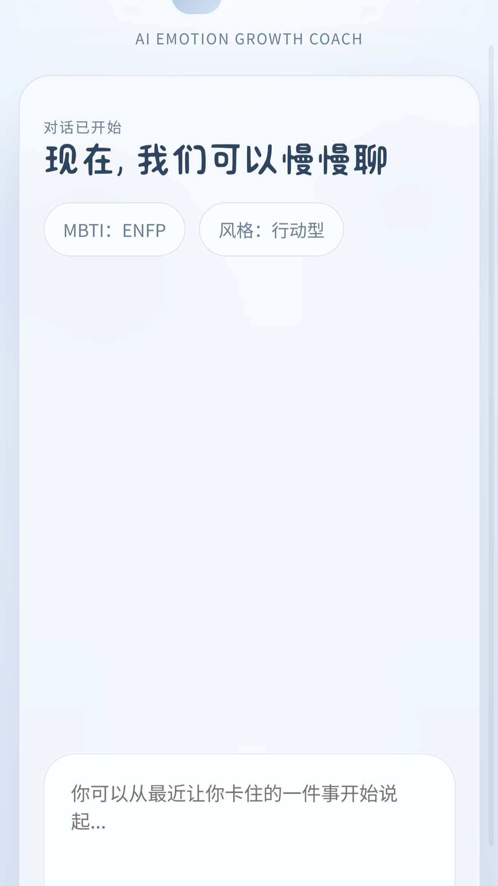

Stage 01
萌芽｜需求洞察
通过一个偶然的契机，我了解到MBTI
随着认识的深入，我创建了一个MBTI相关微博投稿账号
市场分析
内容筛选
用户理解
Stage 01
通过一个偶然的契机，我了解到MBTI
随着认识的深入，我创建了一个MBTI相关微博投稿账号
随着投稿量增加，每天有20+条私信，其中有重复问题。于是我整理了一份清晰的投稿指南并置顶，将常见问题标准化。之后重复提问减少了60%，我可以把时间花在筛选优质内容上。这让我意识到：规则和流程设计，是规模化的前提。
运营一段时间后，我发现有很多群聊宣传，针对特定类型人格的交友投稿。于是我主动创建了一个固定的“交友楼”帖子，让大家在评论区按格式留言。结果这条内容阅读量超过20万，评论区成了一个小型社交场。这让我学会：用户没说出来的需求，才是产品机会。
Stage 02
大一时，我加入了学校的大学生科学技术协会
在协助筹办赛事的过程中，我学会如何把复杂的事情变得有序。
以上为我在30分钟内协调20+团队，重新安排答辩顺序，确保赛事顺利进行的流程图。
Stage 03
大一暑假，我主动进入了课题组
从洗烧杯到独立负责课题，在实验室的两年我学会严谨和坚持。
第一次合成材料离心前后
材料有磁性后被磁铁吸附前后对比
Stage 04
大四下学期，我从零开始自学vibe coding和产品设计，做了一个关于情绪成长的AI网站。
部分问卷数据统计
我在做这个项目之前完全没接触过网站开发和 vibe coding，于是我从零开始，一周内自学并搭出了可交互的 Demo。在 10 天里回收了 95 份问卷，验证核心假设。
AI EMOTION GROWTH COACH
是什么让你现在有点卡住？
或者，聊聊最近发生的事
开始了解自己网站demo首页
Project Case
EchoMind
当前页面中的图片、链接与封面素材均为占位内容，后续可替换为真实项目截图、PRD 封面和网站地址。
项目概览
一个尝试让 AI 更有针对性地理解和回应用户的情绪成长产品。
用户调研｜竞品分析｜需求分析｜产品方案｜原型设计
2026.04
为什么做
很多用户缺的不是一个“能聊天的 AI”，而是一个更懂自己、回应更合适的支持系统。
我想尝试把人格理解、沟通偏好与 AI 对话结合起来，设计一个更具针对性的情绪成长产品。
用户洞察
情绪困扰常与压力、拖延、迷茫、人际关系问题交织出现。
用户想倾诉，但现实中缺少稳定、低负担的支持对象。
现有产品常见问题：模板化、缺少针对性、缺少成长记录。
用户愿意尝试 AI，但前提是 AI 要更懂自己。
竞品分析
现有情绪产品大多集中在记录、表达、陪伴或自助观察。
而“针对性回应”与“长期成长陪伴”仍有明显空白。
产品定位
一款通过人格理解与沟通风格识别，为用户提供更具针对性的 AI 情绪成长支持的产品。
核心方案
建立基础用户画像。
识别用户希望被怎样回应。
根据个体差异动态调整交流方式。
沉淀情绪与成长变化。
核心流程
页面展示

极简单入口，降低开口压力。

区分已知 / 未知人格类型用户。

快速建立基础画像。

识别用户偏好的回应方式。

让用户先感受到“被理解”。

进入更有针对性的教练式交流。
项目收获
完成用户调研与需求提炼
完成竞品分析与产品定位
完成信息架构与原型设计
尝试用 AI 辅助实现网页原型
项目入口